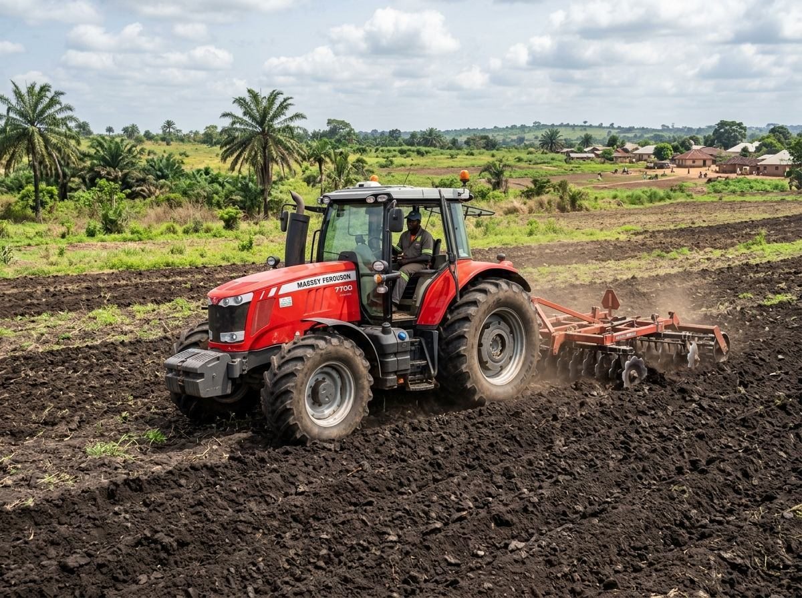
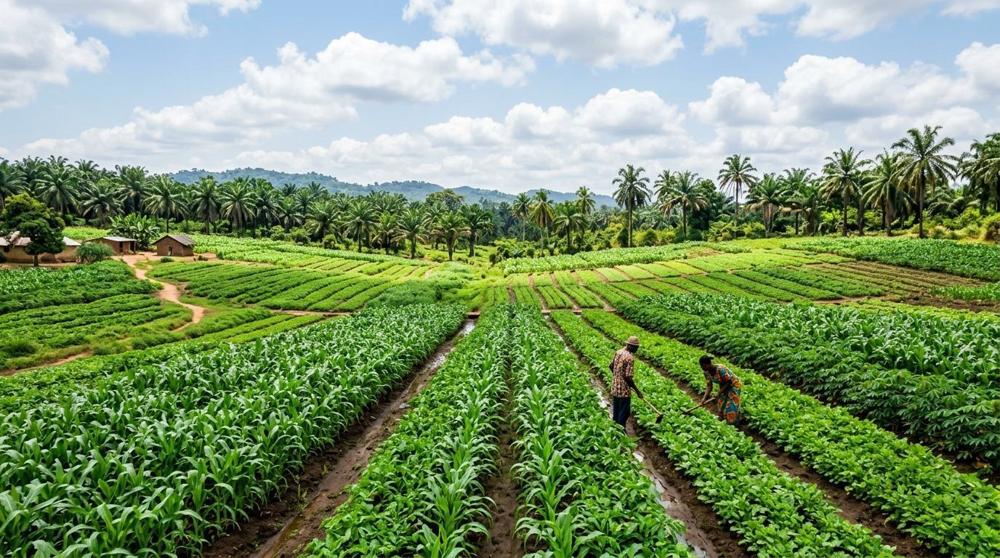
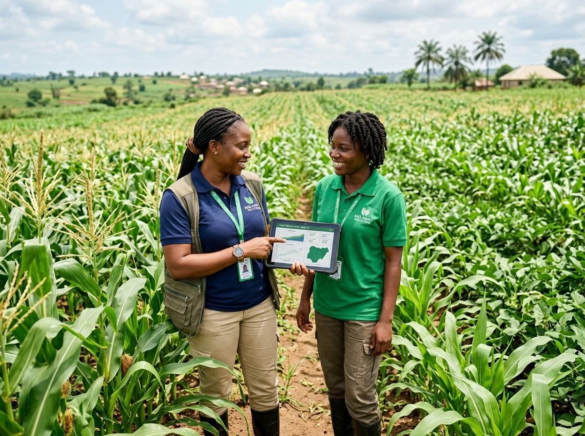
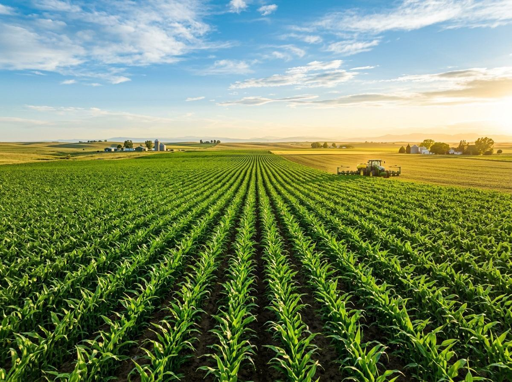
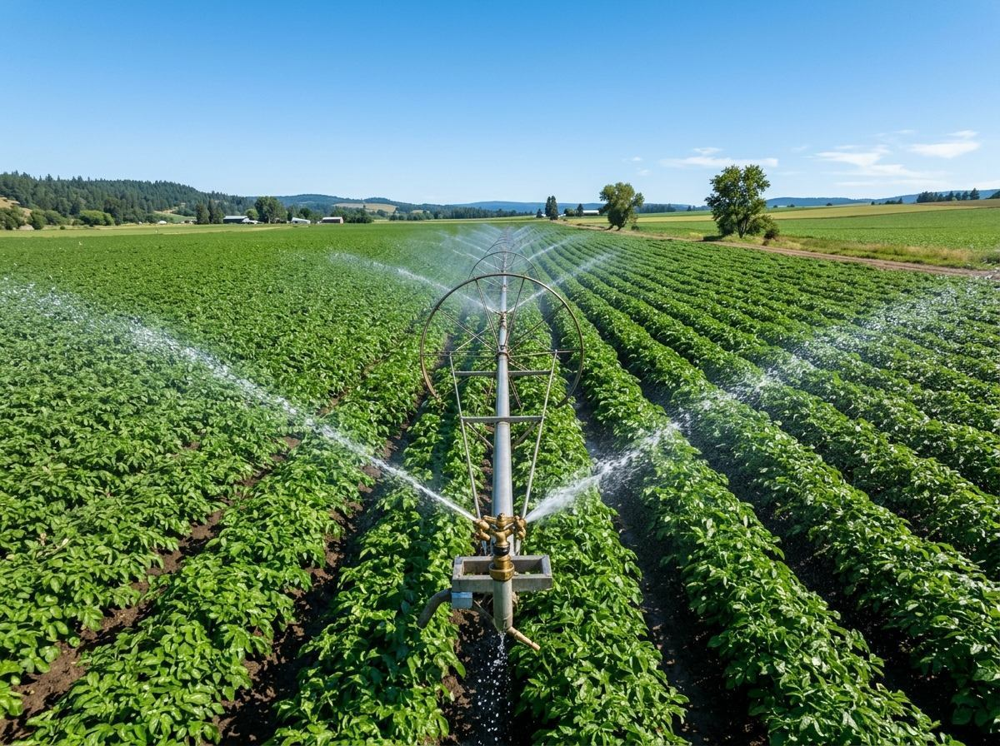
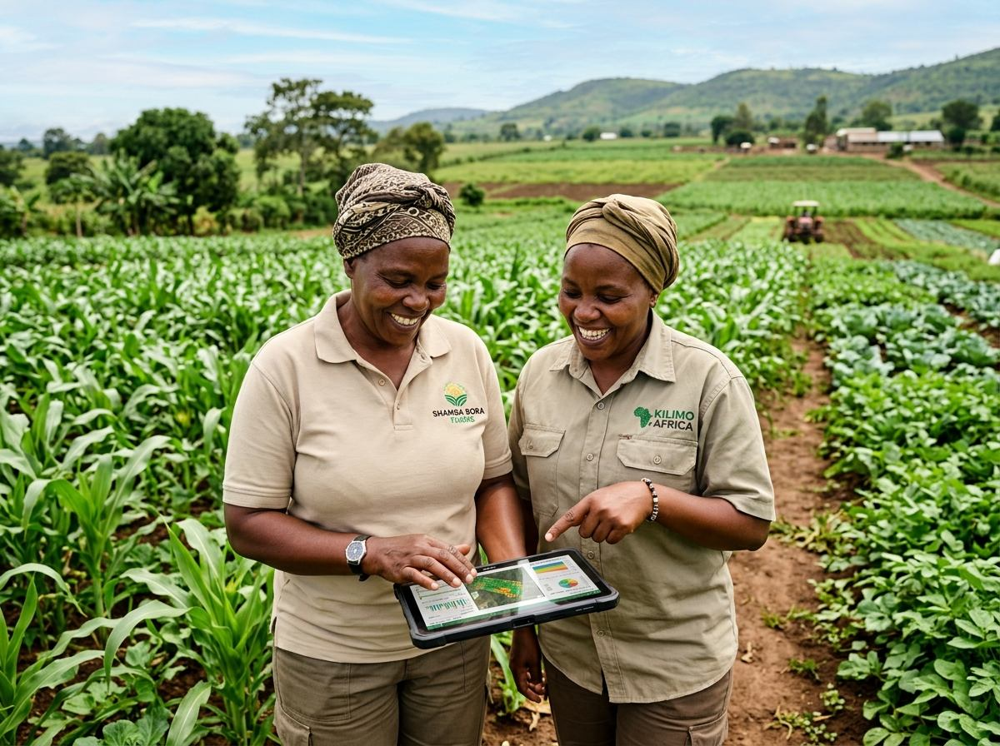
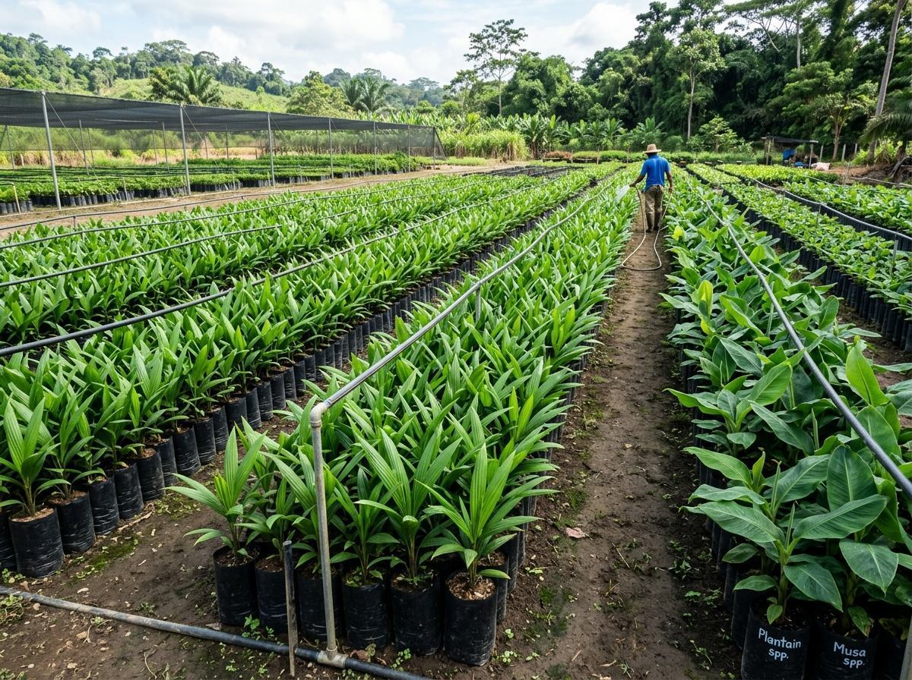

Land PrepSoil Restoration for Sustainable Harvests
How proper land preparation improves water retention and crop yield.

We manage your farm investment in Nigeria, from land assessment and preparation to harvest and market access.
Al-Ansory advances sustainability across Nigeria with trusted local partners and commercial investors.
Hectares Prepared
Projects Managed
Client Satisfaction
Tailored Solutions
Select your profile to see how Al-Ansory manages your agribusiness project.
If you own land in Nigeria that is currently uncultivated, we take care of clearing, soil preparation, planting and management, turning unused acreage into active revenue.

For individuals and companies who want to invest in agriculture without managing daily farm work. We provide transparent reporting, risk management and links to buyers.

Already have an active farm? We install drip and sprinkler irrigation, advise on soil and fertilizer, and supply certified high-yield planting materials.


🌱 LandownersTransform raw land into structured, productive farmland built for long-term growth.
Soil testing, fertilizer recommendations and strategic crop selection.
High-grade oil palm, cashew, plantain and banana planting materials.
Hands-on supervision from land clearing through to harvest.
Regular milestone tracking, field reports and a clear financial overview.
Agronomists handle risk management, pest control and seasonal planning.
Drip and sprinkler infrastructure for year-round crop resilience.
Connecting farm output to reliable buyers, off-takers and processors.
What We Do
Hands-on support at every stage, so your land is set up and managed properly.
Getting your land ready for planting, with a farm layout built around your goals.
High-quality planting materials:
Drip and sprinkler systems so your crops get a dependable water supply year-round.
Soil assessment, crop health monitoring and fertilizer advice.
How We Work
We assess your land and its soil to determine the best crops for it.
We prepare the land, install irrigation where needed and plant quality seedlings.
We handle day-to-day farm management and help connect your produce to buyers.
Our Partners
“We're thrilled to partner with Al-Ansory to create long-term value for growers by connecting farm projects with sustainable soil management.”
“Al-Ansory's work on land preparation and seedling sourcing transformed our commercial farm project. Their technical oversight is excellent.”
Our Work

Land PrepHow proper land preparation improves water retention and crop yield.

SeedlingsSelecting certified, disease-resistant seedlings and suckers to maximise farm profitability.
Why modern irrigation cuts water waste while keeping crops productive year-round.
Leadership
Founder / Project Manager, Al-Ansory Agribusiness Solutions
Badmus Abbas is an experienced agronomist and agricultural project manager with over 8 years of hands-on field experience managing commercial farm setups across Oyo State and Western Nigeria.
He specialises in land preparation, soil rejuvenation, irrigation layout and seedling selection, and oversees every project from the first land survey to the final harvest, connecting landowners with commercial buyers and off-takers.
FAQ
We offer farm setup and land preparation; seedlings and suckers supply (oil palm, cashew, plantain and banana); irrigation system installation; and agro consultancy, covering soil assessment, crop advice and fertilizer advice.
Every project starts with an assessment of your land. We then plan and set up the farm, and manage it through to harvest and market linkage. Contact us for a plan tailored to your land.
Yes. Our agro consultancy service covers soil assessment, crop advice and fertilizer advice.
Contact us on WhatsApp for a plan tailored to your land.